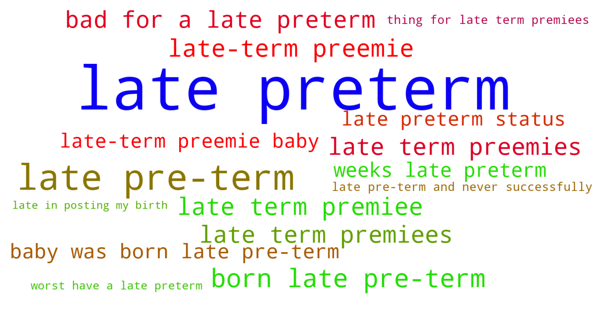
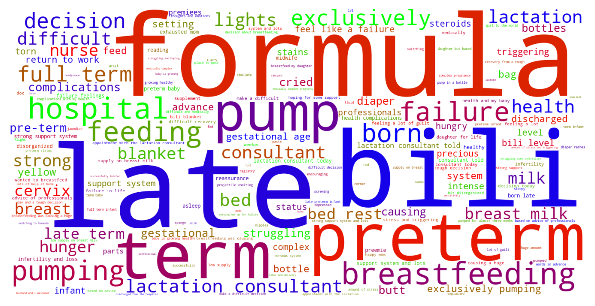

Jump to section:
Samples from Social CorpusHits per UMLS Alias on Social Corpus
Word Cloud Comparison
Embedding Space Comparison
Nearest Neighbors by Semantic Type
Related Analysed Concepts
Samples from Social Corpus
Despite being late preterm , my baby has had no issues and everything is perfect !
Confidence: 0.816. Reddit link
And came across an [ article ]( from the Children's Hospital of Philadelphia about breastfeeding a late preterm infant .
Confidence: 0.816. Reddit link
We got to hear her cry and she didn't have to go to the NICU despite being late preterm !
Confidence: 0.816. Reddit link
My daughter is three weeks and born late preterm .
Confidence: 0.816. Reddit link
Instead of delivering a micro preemie at 23 weeks , my doctors are confident that I can get to full term or at the worst have a late preterm baby .
Confidence: 0.590. Reddit link
He was born at 36 weeks late preterm and had a weak latch and would fall asleep during time on the breast .
Confidence: 0.667. Reddit link
Jack Henry was born at 21:17 weighing 6 lbs 11 oz. ; not bad for a late preterm baby !
Confidence: 0.707. Reddit link
Adjusted age My twins were born 6 weeks early , AKA late preterm .
Confidence: 0.816. Reddit link
Being late preterm , he is very very sleepy , and his sucking reflex needs some more time to develop .
Confidence: 0.816. Reddit link
Postpartum room essentials : 6 ' phone charger cable , robe , sleep mask , water bottle , bath sheet , flip flops , soft clothes / underwear ( I'm a size 16 and the mesh underwear was uncomfortably small ) , facial wipes , dry shampoo , gatorade , nail clipper , razor , snacks , folder to put all the paperwork / copy of marriage certificate for the registrar The newborn going-home clothes I brought were too big for my 6lb late-term preemie baby , next time I 'll pack a preemie outfit .
Confidence: 0.650. Reddit link
Hits per UMLS Alias on Social Corpus
-
late preterm birth
18 hits
-
late pre term
11 hits
Word Cloud Comparison
Keywords matching C3829315
Keywords matched against concept. Word size represents frequency.
Keywords co-occurring with C3829315
Co-occurrence is measured at the document-level (i.e. Reddit submissions). Frequencies are normalized to account for keywords common to all CUIs.
Embedding Space Comparison
T-SNE comparison for word embeddings learned from medical domain (EuroPMC) and social media (Reddit) independently.
Pearson correlation for union of closest 1000 neighbors: -0.186
Nearest Neighbors by Semantic Type
Most similar concepts in each of the selected UMLS semantic types. Based on concept embeddings from social corpus.
T046 (Pathologic Function)
-
C0151526
Pre term
0.889 Similarity
-
C0022876
Early labor
0.842 Similarity
-
C0032993
Post dates
0.751 Similarity
-
C0729264
Preterm premature rupture membrane
0.732 Similarity
-
C0810343
Complications during labor
0.731 Similarity
-
C0015944
Pregnancy prom
0.725 Similarity
-
C0022865
Complications labor
0.723 Similarity
-
C0269810
Sepsis during labor
0.717 Similarity
T061 (Therapeutic or Preventive Procedure)
-
C0269694
Normal birth
0.765 Similarity
-
C0269704
Spontaneous vaginal breech birth
0.732 Similarity
-
C0011209
Delivery
0.717 Similarity
-
C0404381
Delivery placenta
0.674 Similarity
-
C0200066
Medical induction labor
0.670 Similarity
-
C0559916
Water birth delivery
0.670 Similarity
-
C0473288
Stabilising induction
0.666 Similarity
-
C0565867
Delivery method
0.659 Similarity
T079 (Temporal Concept)
-
C2964377
Preterm time
0.750 Similarity
-
C0443252
Long term
0.735 Similarity
-
C0443303
Short term
0.705 Similarity
-
C0016145
First born child
0.685 Similarity
-
C0178795
Perinatal
0.675 Similarity
-
C4025592
Late onset
0.669 Similarity
-
C0421451
Birthdate
0.669 Similarity
-
C0022871
Labor first stage
0.662 Similarity
T100 (Age Group)
-
C4048294
Preterm baby
0.749 Similarity
-
C4551581
Full term baby
0.695 Similarity
-
C3494262
Extremely preterm infant
0.690 Similarity
-
C0021289
Newborn
0.497 Similarity
-
C3825962
Middle aged women
0.492 Similarity
-
C0678804
Prenatal
0.436 Similarity
-
C0021270
Baby
0.417 Similarity
-
C0596728
65 years old
0.399 Similarity
T047 (Disease or Syndrome)
-
C0231341
Aging premature
0.730 Similarity
-
C0342257
Diabetes complications
0.700 Similarity
-
C0877121
Aids related complications
0.691 Similarity
-
C0015934
Intrauterine growth restriction
0.679 Similarity
-
C0268318
Cholestasis pregnancy
0.676 Similarity
-
C0032051
Placental insufficiency
0.670 Similarity
-
C0340464
Extrasystoles
0.667 Similarity
-
C0033036
Atrial premature contractions
0.667 Similarity
T184 (Sign or Symptom)
-
C2735340
Preterm labor symptoms
0.725 Similarity
-
C2985326
Signs impending birth
0.704 Similarity
-
C0565619
Fetal distress labor
0.696 Similarity
-
C1301639
Pain during labor delivery
0.696 Similarity
-
C0231243
Complications early
0.691 Similarity
-
C0474368
Laboring pain
0.661 Similarity
-
C3494358
Prodromal sign
0.640 Similarity
-
C0152032
Hesitancy
0.621 Similarity
T060 (Diagnostic Procedure)
-
C0040862
Labor trial
0.716 Similarity
-
C0033053
Prenatal diagnoses
0.659 Similarity
-
C0200048
Vaginal exam
0.640 Similarity
-
C0032976
Pregnancy test
0.618 Similarity
-
C0206521
Interventional ultrasound
0.617 Similarity
-
C1578855
Monitoring labor
0.610 Similarity
-
C0007208
Cardiotocography
0.591 Similarity
-
C0302488
Specialized medical examination
0.580 Similarity
T032 (Organism Attribute)
-
C4086849
Sex at birth
0.702 Similarity
-
C0017504
Gestational age
0.639 Similarity
-
C0005612
Weight baby
0.638 Similarity
-
C0805393
Breathing spontaneous
0.621 Similarity
-
C1954788
Gestational age weeks
0.581 Similarity
-
C0751992
Fetal weight
0.550 Similarity
-
C0598779
Life history
0.544 Similarity
-
C0026578
Mosaicism
0.539 Similarity
T037 (Injury or Poisoning)
-
C0005604
Traumatic birth
0.698 Similarity
-
C0269858
Traumatic lesion during delivery
0.685 Similarity
-
C0730592
Vulval tear during delivery
0.650 Similarity
-
C0417108
Jump from burning hospital
0.646 Similarity
-
C1959898
Traumatic injury during pregnancy
0.643 Similarity
-
C0554397
Vaginal muscle tear
0.624 Similarity
-
C3544104
Exposure during pregnancy
0.619 Similarity
-
C3203359
Ruptures
0.585 Similarity
T067 (Phenomenon or Process)
-
C0023983
Long term effects
0.690 Similarity
-
C2986841
Binding potential
0.610 Similarity
-
C0677038
Increase pressure
0.572 Similarity
-
C2348438
Encapsulation
0.519 Similarity
-
C0023670
Events life change
0.502 Similarity
-
C0337240
Fall while being carried
0.501 Similarity
-
C0034897
Recurring
0.491 Similarity
-
C0023672
Experience life
0.487 Similarity
T201 (Clinical Attribute)
-
C0566679
Length labor
0.676 Similarity
-
C1301668
Delivery time
0.670 Similarity
-
C1286282
Birth outcomes
0.663 Similarity
-
C1286049
Aspect delivery
0.637 Similarity
-
C1286038
Position pregnancy
0.613 Similarity
-
C1275644
Reading add
0.591 Similarity
-
C1286057
Completeness placenta
0.591 Similarity
-
C1285995
Measure uterine contractions
0.580 Similarity
T048 (Mental or Behavioral Dysfunction)
-
C0522187
Fear childbirth
0.670 Similarity
-
C0038436
Ptsd
0.607 Similarity
-
C0233704
Fears pregnancy
0.596 Similarity
-
C0338927
Hospitalism
0.588 Similarity
-
C0563172
Dangerous plans
0.588 Similarity
-
C4543692
Anxiety pregnancy
0.572 Similarity
-
C1306341
Mental disability
0.569 Similarity
-
C0038441
Stress disorder
0.564 Similarity
T042 (Organ or Tissue Function)
-
C4250378
Neural induction
0.667 Similarity
-
C0032058
Placentation
0.629 Similarity
-
C2753527
Heart induction
0.625 Similarity
-
C1325917
Organ induction
0.624 Similarity
-
C0005778
Clotting
0.589 Similarity
-
C4244173
Gestational development process
0.564 Similarity
-
C0312426
Hormone production
0.548 Similarity
-
C0006660
Mineral
0.541 Similarity
T019 (Congenital Abnormality)
-
C0432185
Absent muscles since birth
0.656 Similarity
-
C0000768
Birth defect
0.627 Similarity
-
C0266383
Abnormality uterus
0.607 Similarity
-
C4721530
Sparse hair since birth
0.596 Similarity
-
C0018798
Heart defect
0.596 Similarity
-
C0266393
Uterus didelphys
0.590 Similarity
-
C0266387
Bicornuate uterus
0.569 Similarity
-
C0266449
Brain malformation
0.565 Similarity
T049 (Cell or Molecular Dysfunction)
-
C4725191
Stop lost
0.651 Similarity
-
C0002938
Aneuploidy
0.579 Similarity
-
C0544885
Stop gain
0.547 Similarity
-
C1705285
Mutated
0.525 Similarity
-
C0008628
Del
0.522 Similarity
-
C0008625
Chromosomal abnormality
0.513 Similarity
-
C0040715
Translocation
0.491 Similarity
-
C0041107
Trisomy
0.466 Similarity
T200 (Clinical Drug)
-
C3216620
Progesterone vaginal product
0.647 Similarity
-
C5222490
Progesterone injection
0.551 Similarity
-
C3218395
Papain pill
0.545 Similarity
-
C1247687
Progesterone suppositories vaginal
0.545 Similarity
-
C1247002
Misoprostol oral tablet
0.479 Similarity
-
C0723917
Triple antibiotic ointment
0.477 Similarity
-
C0307304
Pitocin injection
0.470 Similarity
-
C4048176
Oxytocin injection
0.469 Similarity
T059 (Laboratory Procedure)
-
C0200896
Cytogenetic studies
0.642 Similarity
-
C1295143
Fetal fibronectin test
0.594 Similarity
-
C0368930
Clotting time
0.583 Similarity
-
C0850355
Pregnancy blood test
0.570 Similarity
-
C0430400
Culture general
0.559 Similarity
-
C0005729
Bleeding time
0.553 Similarity
-
C0023901
Liver tests
0.550 Similarity
-
C0851081
Progesterone test
0.544 Similarity
T031 (Body Substance)
-
C0392908
Secretion vaginal
0.625 Similarity
-
C3532405
Swab from placenta
0.583 Similarity
-
C0439057
Early morning urine
0.534 Similarity
-
C1446336
Multiple plaques
0.523 Similarity
-
C0007806
Spinal fluid
0.516 Similarity
-
C3496630
Swab from uterus
0.497 Similarity
-
C3532423
Swab from hand
0.493 Similarity
-
C0162371
Cord blood
0.491 Similarity
T034 (Laboratory or Test Result)
-
C0427777
Pregnancy results tests
0.611 Similarity
-
C0240802
Positive pregnancy test
0.607 Similarity
-
C5201036
Low platelets
0.592 Similarity
-
C2266672
Clotting time finding
0.580 Similarity
-
C0427780
Negative pregnancy test
0.577 Similarity
-
C3898879
Triple positive
0.567 Similarity
-
C5206315
Nse positive
0.560 Similarity
-
C0588465
Sperm forward progression
0.553 Similarity
T190 (Anatomical Abnormality)
-
C0269852
Previa vasa
0.607 Similarity
-
C4025734
Anomaly scalp
0.590 Similarity
-
C4732742
Hole center heart
0.578 Similarity
-
C3887590
Stricture ureter
0.570 Similarity
-
C0332447
Anomaly
0.530 Similarity
-
C0302142
Anatomic abnormality
0.527 Similarity
-
C0266785
Umbilical cord issue
0.526 Similarity
-
C0405024
Accessory placenta
0.523 Similarity
T101 (Patient or Disabled Group)
-
C0871503
Dying patients
0.605 Similarity
-
C0233363
Monoamniotic twins
0.576 Similarity
-
C0021562
Inpatient
0.548 Similarity
-
C0008098
Child hospitalized
0.542 Similarity
-
C0032804
Postpartum women
0.531 Similarity
-
C4727511
Women who have mastectomy
0.525 Similarity
-
C1516213
Cancer patient
0.517 Similarity
-
C0748064
Inpatient psychiatric
0.503 Similarity
T005 (Virus)
-
C3743464
Mycobacteriophage whirlwind
0.604 Similarity
-
C1220459
Hart park group
0.550 Similarity
-
C5058350
Fairfax lookout virus
0.529 Similarity
-
C4415400
Phage wrath
0.521 Similarity
-
C0205939
Cold virus common
0.503 Similarity
-
C3768023
Mycobacteriophage conspiracy
0.491 Similarity
-
C4433204
King virus
0.459 Similarity
-
C0086776
Parvovirus
0.439 Similarity
T018 (Embryonic Structure)
-
C0440731
Fetal brain
0.581 Similarity
-
C1278988
Entire placenta
0.570 Similarity
-
C0008508
Chorionic villi
0.560 Similarity
-
C0032043
Placenta
0.551 Similarity
-
C0553522
Cord placenta umbilical
0.546 Similarity
-
C0553498
Gestational sac
0.539 Similarity
-
C0015935
Fetal heart
0.539 Similarity
-
C0015965
Fetal
0.530 Similarity
T023 (Body Part, Organ, or Organ Component)
-
C0042149
Uterus
0.576 Similarity
-
C1268155
Placenta part
0.576 Similarity
-
C0227486
Left liver
0.573 Similarity
-
C0007776
Grey matter
0.572 Similarity
-
C0042232
Vaginal
0.564 Similarity
-
C0227266
Villus
0.563 Similarity
-
C0032005
Pituitary
0.552 Similarity
-
C0007874
Cervix
0.550 Similarity
T074 (Medical Device)
-
C0593622
Home pregnancy test
0.572 Similarity
-
C3878737
Uternine contraction monitor internal
0.535 Similarity
-
C0013962
Emergency medical tag
0.523 Similarity
-
C0180647
Internal fetal heart rate monitoring
0.521 Similarity
-
C0085104
System
0.518 Similarity
-
C0740043
Medical supplies
0.517 Similarity
-
C1875469
Med pass
0.510 Similarity
-
C1956079
Dressing negative pressure
0.499 Similarity
T054 (Social Behavior)
-
C0582101
Talking about dying
0.570 Similarity
-
C0815201
Couple relations
0.567 Similarity
-
C0422386
Patient suing doctor finding
0.538 Similarity
-
C0028658
Nurse patient
0.512 Similarity
-
C0282657
Infibulations
0.511 Similarity
-
C0679426
Incompatibility
0.500 Similarity
-
C2936696
Group thinking
0.498 Similarity
-
C0019421
Straight
0.492 Similarity
T041 (Mental Process)
-
C0025265
Short term memory
0.569 Similarity
-
C0596475
Early experience
0.561 Similarity
-
C0282124
Near death experience
0.549 Similarity
-
C1999057
Assimilation
0.536 Similarity
-
C0025361
Thought process
0.535 Similarity
-
C0584925
Out body experience
0.524 Similarity
-
C0237607
Experience
0.524 Similarity
-
C0814069
Visual spatial ability
0.524 Similarity
T039 (Physiologic Function)
-
C0743925
Fetal growth
0.566 Similarity
-
C0599423
Joint stress
0.562 Similarity
-
C3852954
Physiome
0.518 Similarity
-
C0149784
Reaction stress
0.499 Similarity
-
C2256369
Heart process
0.493 Similarity
-
C0015928
Fetal development
0.492 Similarity
-
C3178752
Effect fertility
0.488 Similarity
-
C0035203
Ventilation
0.475 Similarity
T007 (Bacterium)
-
C0018154
Gram positive bacteria
0.540 Similarity
-
C0995648
Genus quinella
0.514 Similarity
-
C0579233
Group b strep
0.445 Similarity
-
C0995705
Frankia
0.442 Similarity
-
C0022828
L forms
0.431 Similarity
-
C4169658
Convivina
0.413 Similarity
-
C0597134
Flora oral
0.408 Similarity
-
C0036111
Salmonella
0.403 Similarity
T044 (Molecular Function)
-
C0887940
Gene arrangements
0.535 Similarity
-
C1749457
Ligands activity
0.508 Similarity
-
C1149528
Wishful thinking binding
0.506 Similarity
-
C1148613
Binding iron
0.478 Similarity
-
C1150342
Dopachrome rearranging enzyme
0.464 Similarity
-
C2247516
Sgah
0.450 Similarity
-
C1152025
Docs
0.441 Similarity
-
C1721104
Breaks dna
0.434 Similarity
T195 (Antibiotic)
-
C0723285
Septa
0.505 Similarity
-
C0003232
Antibiotics
0.482 Similarity
-
C0013090
Doxycycline
0.408 Similarity
-
C0310367
Today
0.404 Similarity
-
C0718575
Antibiotics ear
0.396 Similarity
-
C1564058
Roxi basics
0.371 Similarity
-
C0718950
Biomox
0.359 Similarity
-
C0002645
Amoxicillin
0.353 Similarity